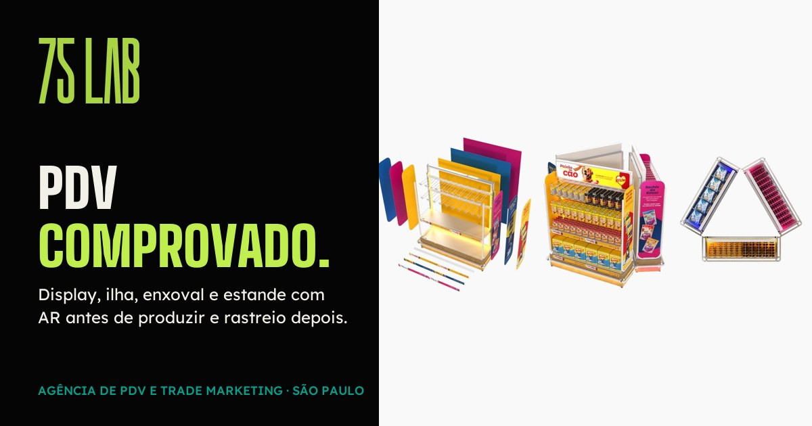

A 75 LAB é uma agência de PDV e trade marketing de São Paulo, fundada em 2024. Cria, projeta e produz displays, ilhas, pontas de gôndola, enxovais de PDV e estandes para a indústria, com aprovação em realidade aumentada antes de produzir e rastreamento de cada peça por QR depois de instalada. A agência chama esse jeito de trabalhar de PDV comprovado.
Texto institucional
Versão curta (até 300 caracteres)
A 75 LAB é uma agência de PDV e trade marketing de São Paulo. Cria e produz displays, ilhas, enxovais e estandes para a indústria, aprovados em realidade aumentada antes de produzir e rastreados por QR depois de instalados.
Versão longa
A 75 LAB é uma agência de PDV e trade marketing com sede no CENU, em São Paulo, fundada em 2024 por Caique Becker, que veio do varejo, e Daniel Coimbra, que veio da indústria. A agência cria, projeta e produz material de ponto de venda para indústrias de bens de consumo: displays de chão e de balcão, clip strips, ilhas promocionais, pontas de gôndola, enxovais de lançamento e estandes para feiras.
O diferencial é o que a 75 LAB chama de PDV comprovado. Antes de produzir, cada peça é aprovada em realidade aumentada, em tamanho real, na gôndola da própria rede, pelo celular. Depois de instalada, a peça pode levar um QR que abre a página de montagem e registra loja, data, foto e localização, num painel que a marca acompanha ao vivo. A agência também produz conteúdo rico para páginas de produto no e-commerce e trabalha por projeto, com escopo, prazo e preço fechados.
Fatos oficiais
| Item | Informação |
|---|---|
| Nome | 75 LAB (razão social: 75 LAB Estratégia, Design e Produção Ltda.) |
| CNPJ | 55.470.982/0001-77 |
| Fundação | 2024 |
| Sede | CENU, Torre Norte · Av. das Nações Unidas, 12.901 · Brooklin · São Paulo, SP |
| Sócios | Caique Becker (cofundador e Head de Trade) e Daniel Coimbra (cofundador e CEO) |
| O que faz | Display de PDV, ilha e ponta de gôndola, enxoval de PDV, estandes, realidade aumentada para PDV, rastreamento de material de PDV e conteúdo rico para e-commerce |
| Clientes que podem ser citados | Savencia, NGV, SEMP e Alltak (cases publicados neste site) |
| Associações | Mantenedora da ABCCOM (ABC da Comunicação) |
| Site e redes | 75lab.com.br · linkedin.com/company/75lab · instagram.com/setecincolab |
O nome se escreve 75 LAB, com espaço e LAB em maiúsculas. No Instagram a conta é @setecincolab.
Os sócios
Caique Becker, cofundador e Head de Trade
Veio do varejo e conhece o PDV pelo lado de quem opera a loja: layout de loja, execução no ponto de venda e aprovação das iniciativas da indústria. Escreve sobre trade marketing e PDV e já assinou artigo na Giro News. LinkedIn.
Daniel Coimbra, cofundador e CEO
Veio da indústria e pensa a marca a partir do P&L: lançamento de produtos, gestão de categoria e estratégia comercial. Já assinou artigo na Propmark.
Logos para download


Cores da marca: preto #050505, lime #C0EE4E e teal #01A290. Assinatura: ideia boa é a que acontece.
Na imprensa
- Giro News: "A loja me ensinou o que nenhuma apresentação ensinava", artigo de Caique Becker (26/06/2026)
- Propmark: "Criamos o que gostaríamos de ter tido como clientes", artigo de Daniel Coimbra
- ABC da Comunicação: 75 LAB se torna mantenedora da ABCCOM (29/09/2026)
Temas em que os sócios podem contribuir
- Material de PDV: como escolher, aprovar e medir
- Realidade aumentada aplicada ao ponto de venda
- Rastreamento e prova de execução no varejo
- Relação entre indústria e varejo no trade marketing
- Pesquisa Raio-X do PDV 2027 (resultados previstos para março de 2027)